Schedule 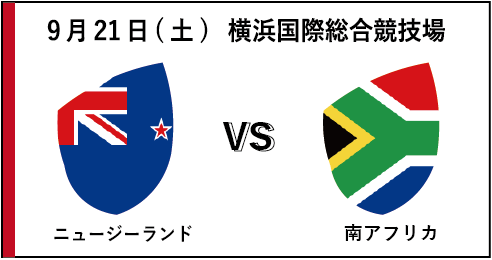 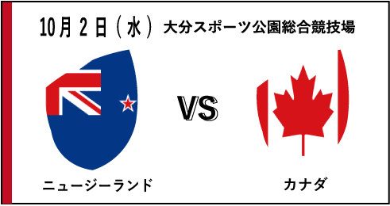 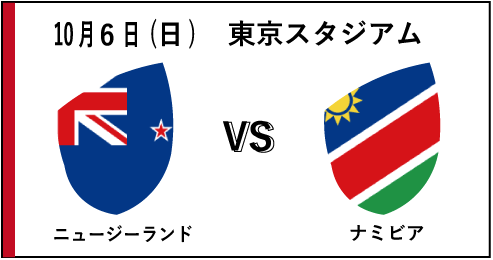 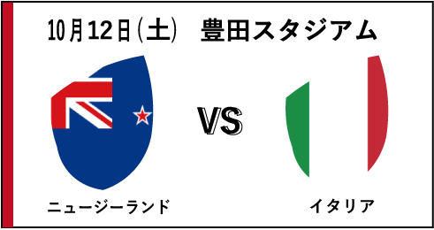 National Teams puleA 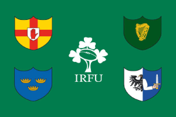アイルランド 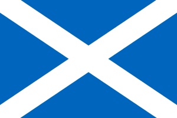スコットランド 日本 ロシア サモア puleB ニュージーランド 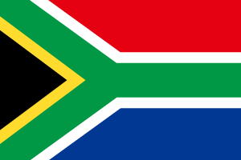南アフリカ イタリア ナミビア カナダ puleC イングランド フランス 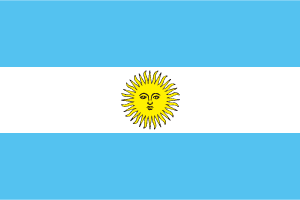アルゼンチン アメリカ トンガ puleD オーストラリア 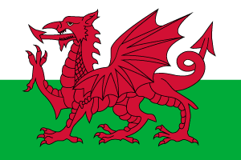ウェールズ ジョージア フィジー 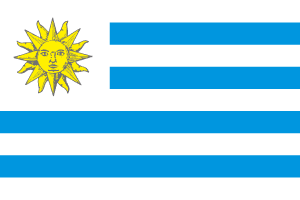ウルグアイ Stadium 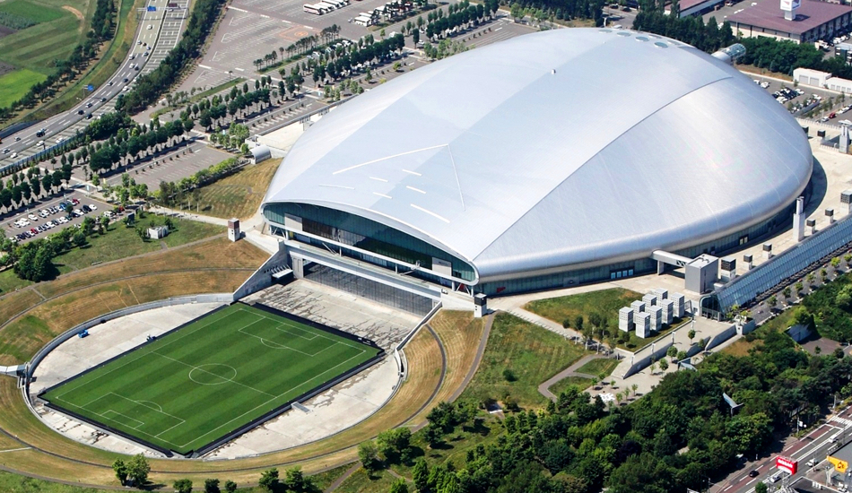 北海道札幌ドーム 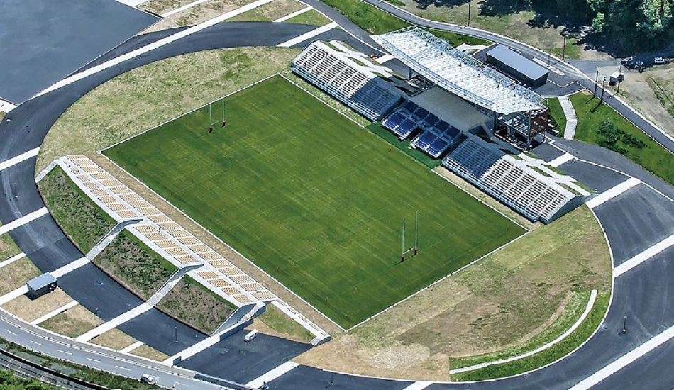 岩手釜石鵜住居復興スタジアム 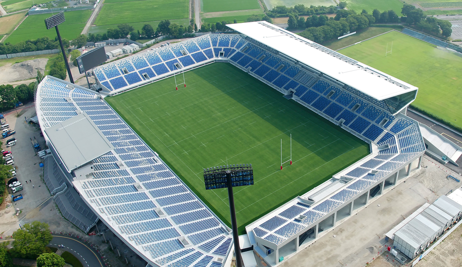 埼玉県熊谷ラグビー場 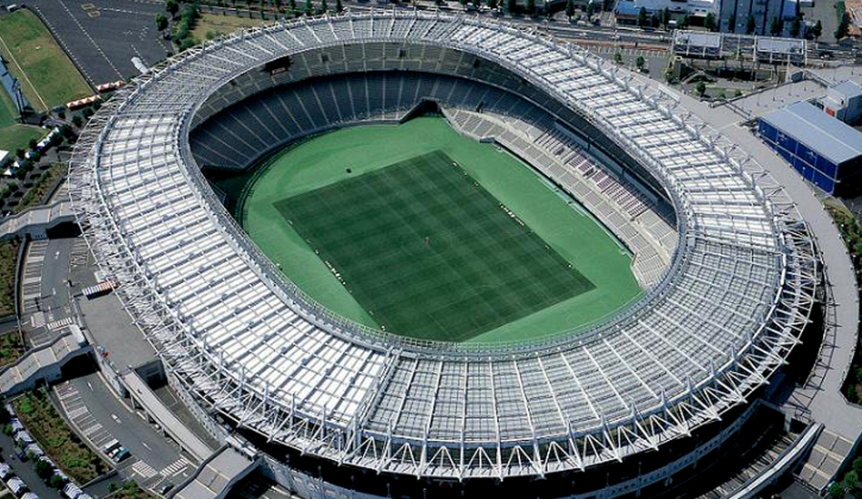 東京都東京スタジアム 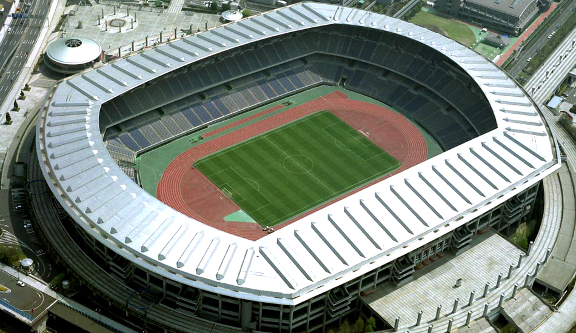 神奈川県横浜国際総合競技場 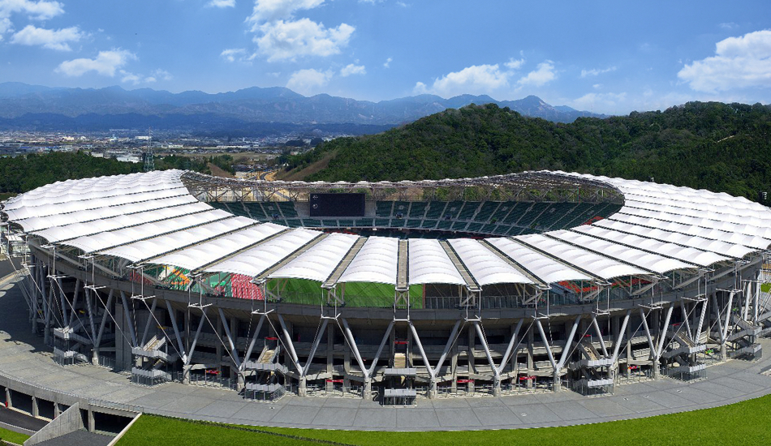 静岡県小笠山総合運動公園エコパスタジアム 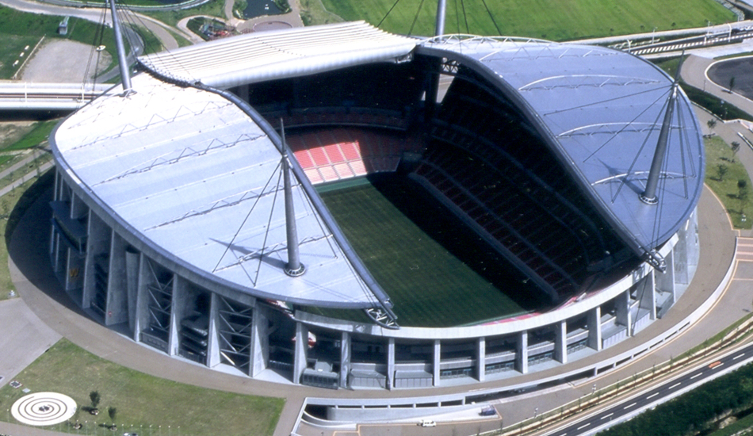 愛知県豊田スタジアム 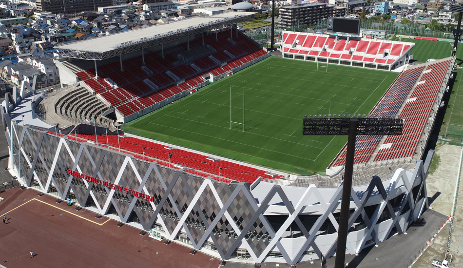 大阪府東大阪市花園ラグビー場 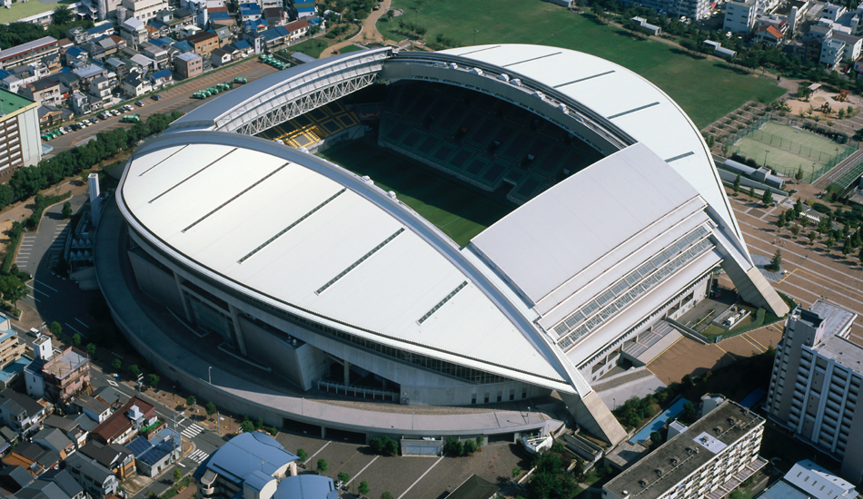 兵庫県神戸市御崎公園球技場 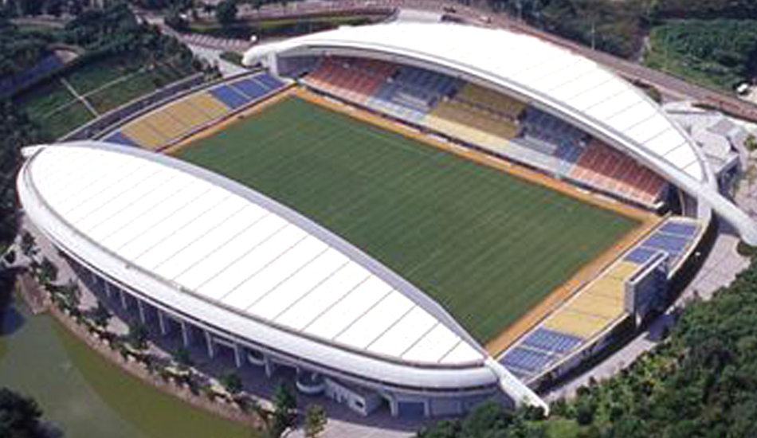 福岡県東平尾公園博多の森球技場 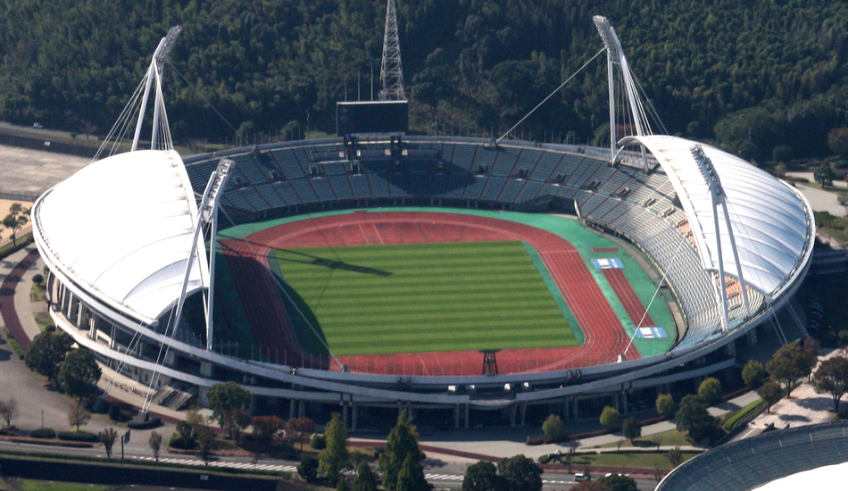 熊本県熊本県民総合運動公園陸上競技場 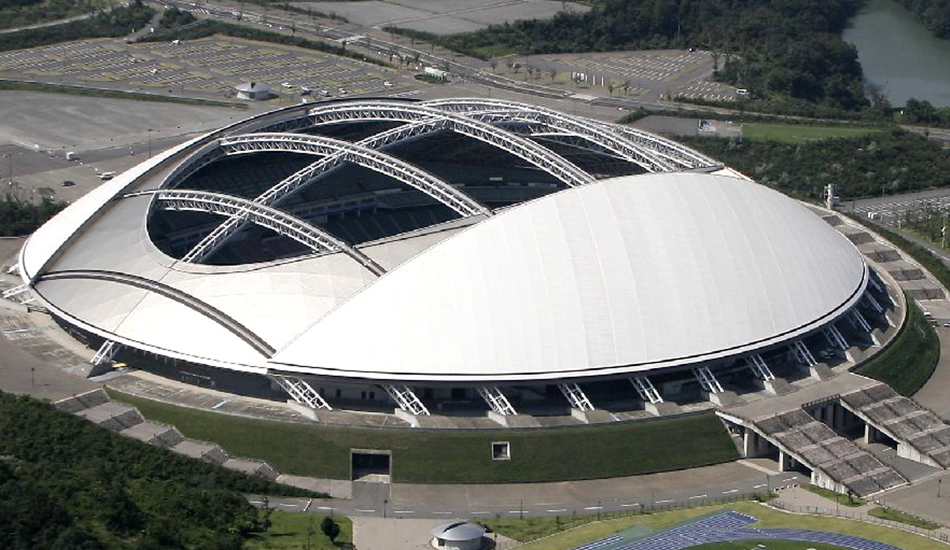 大分県大分スポーツ公園総合競技場 Ticket チケットも残りわずか現地で観戦したいなら今すぐに購入しよう!! 世界のラグビーが日本にやってくる!日本ではなかなか観られない、世界最高峰の真剣勝負を見逃すな! 今すぐ購入 Gallery 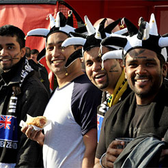 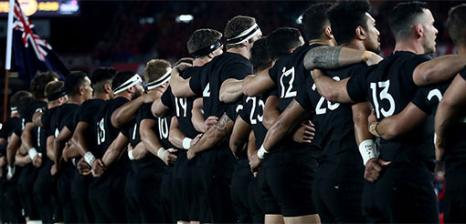 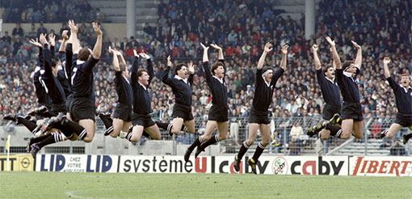